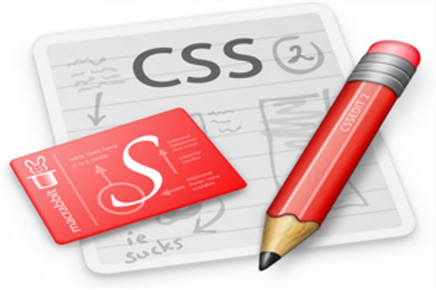
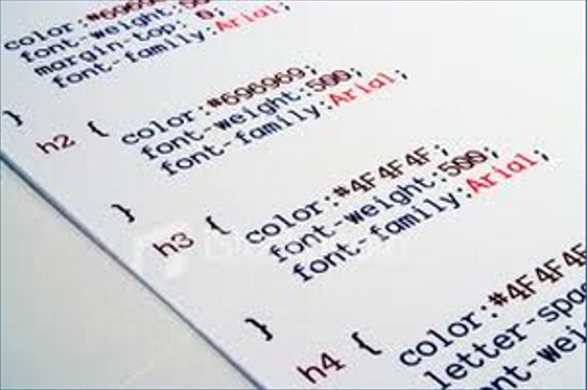

სტილების კასკადური ცხრილი CSS (Cascading Style Sheets) წარმოადგენს ვებ გვერდის დიზაინის აწყობის ყველაზე გავცელებილ, მარტივ და მოსახერხებელ ტექნოლოგიას
CSS-ის საშუალებით შესაძლებელია ნებისმიერი ვებ გბერდის გალამაზება, დიზანის მოხერხებული სტილების შექმნა.
CSS ტექნოლოგიის მხარდაჭერა დღეს-დღეისობით აქვს ყველა თანამედრო ბრაუზერს, ამიტომაც ვებ სივცრცეში თითქმის არ არსებობს ვებ გვერდი, რომელიც არ იყენებს აღნიშნულ ტექნოლოგიას.
ვიდრე CSS ტექნოლოგიის სწავლას გადაწყვეტთ, მანამდე საჭიროა კარგად გაეცნოთ საიტების აგების საფუძვლებს HTML ტექნოლოგიას